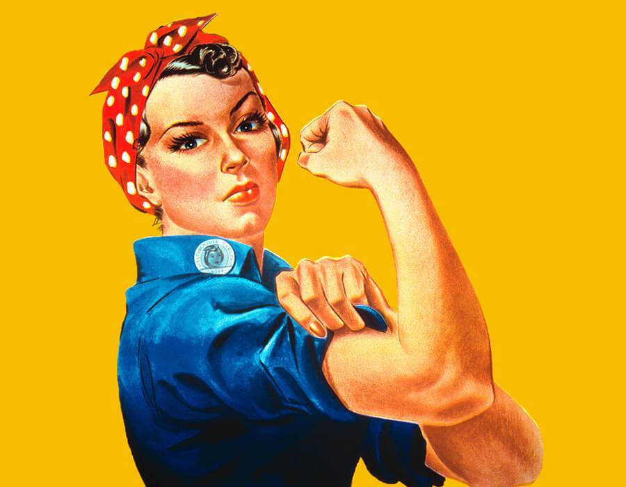
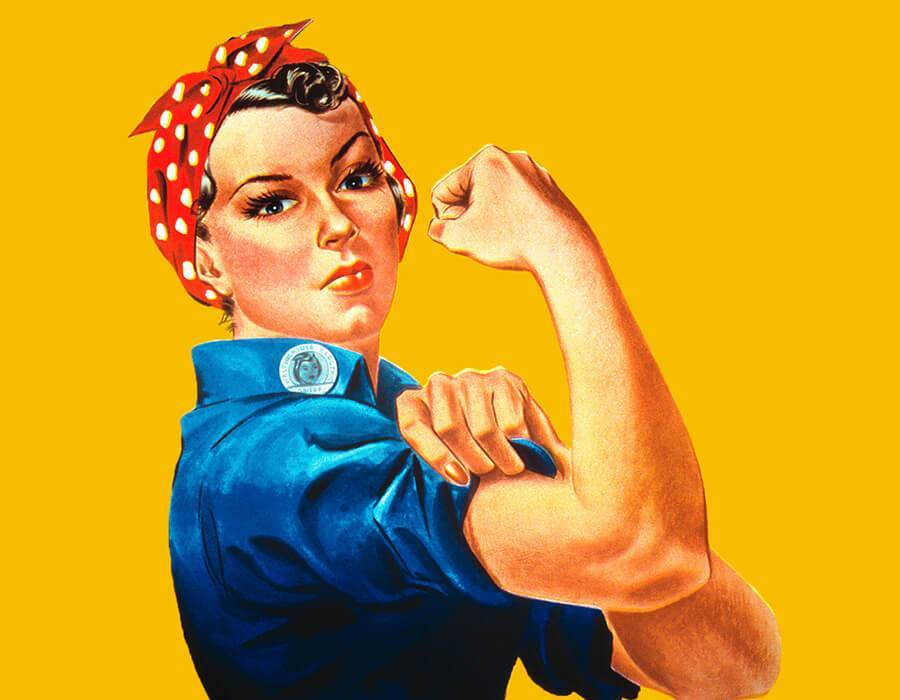

O feminismo é um movimento social que, segundo os historiadores, surgiu após a Revolução Francesa e que se fortaleceu na Inglaterra, durante o século XIX, e depois nos Estados Unidos, no começo do século XX. Esse movimento luta pela igualdade de condições entre homens e mulheres, no sentido de que ambos tenham os mesmos direitos e as mesmas oportunidades.
Feminismo não é o oposto de machismo, pois o machismo é uma construção social que promove e justifica atos de agressão e opressão contra as mulheres. Já o feminismo, conforme mencionamos, é o movimento social que luta contra as manifestações do machismo na sociedade.


 
